|
Turn back the floor carpet, remove the 2 clips, and remove the column hole cover silencer sheet.
Stabilizer Bar Front Removal |
| 1. Check Front Tires Straight-ahead Position |
| 2. Secure Steering Wheel |
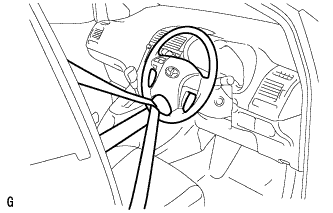 |
To prevent the spiral cable from breaking, secure the steering wheel with the seat belt so that it does not turn.
| 3. Remove Column Hole Cover Silencer Sheet |
|
Turn back the floor carpet, remove the 2 clips, and remove the column hole cover silencer sheet.
| 4. Disconnect Steering Intermediate Shaft Assembly NO.2 |
 |
Remove the bolt from steering intermediate shaft assembly No.2.
Slide steering intermediate shaft assembly No.2 toward the steering column assembly until the serrations of the steering intermediate shaft are visible.
 |
Put matchmarks on steering intermediate shaft assembly No.2 and the steering intermediate shaft.
Disconnect steering intermediate shaft assembly No.2 from the steering intermediate shaft.
| 5. Disconnect Steering Column Hole Cover Sub-assembly NO.1 |
 |
Push clip B toward the center of the cover, push down clip A, and disconnect steering column hole cover No.1 from the floor panel.
| 6. Remove Front Tire |
| 7. Remove Engine Under Cover NO.1 |
| 8. Remove Engine Under Cover NO.2 |
| 9. Remove Engine Under Cover Rear LH |
Remove the 5 clips and the engine under cover rear LH.
| 10. Remove Engine Under Cover Rear RH |
| 11. Disconnect Tie Rod End Sub-assembly LH |
Remove the cotter pin and castle nut.
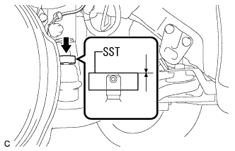 |
Install SST to the tie rod end LH.
Using SST, disconnect the tie rod end LH from the steering knuckle.
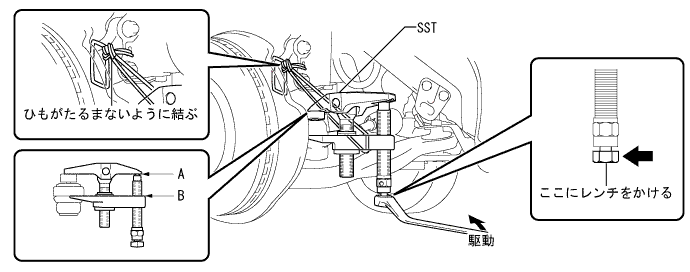
| 12. Disconnect Tie Rod End Sub-assembly RH |
| 13. Disconnect Front Stabilizer Link Assembly LH |
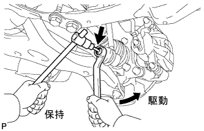 |
Remove the nut and disconnect the front stabilizer link assembly LH from the front stabilizer bar.
| 14. Disconnect Front Stabilizer Link Assembly RH |
| 15. Disconnect Front Suspension Arm Sub-assembly Lower NO.1 LH |
 |
Remove the bolt and 2 nuts.
Push down the front suspension lower arm No.1 LH and disconnect it from the front lower ball joint LH.
| 16. Disconnect Front Suspension Arm Sub-assembly Lower NO.1 RH |
| 17. Loosen Front Suspension Arm Sub-assembly Lower NO.1 LH |
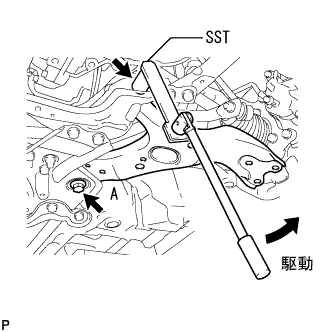 |
Using SST, loosen the bolts.
Loosen bolt A.
| 18. Remove Engine Front Mounting Bracket Reinforcement Lower |
 |
Remove the 2 bolts and the engine front mounting bracket reinforcement lower.
| 19. Remove Front Suspension Member Reinforcement LH |
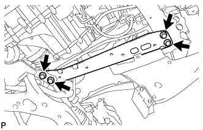 |
Remove the 4 bolts and front suspension member reinforcement LH.
| 20. Remove Front Suspension Member Reinforcement RH |
| 21. Remove Front Suspension Member Brace Rear LH |
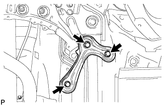 |
Remove the 3 bolts and the front suspension member brace rear LH.
| 22. Remove Front Suspension Member Brace Rear RH |
| 23. Remove Front Suspension Crossmember Sub-assembly |
Remove the 2 bolts and 2 nuts, and disconnect the engine mounting insulator rear from the front suspension crossmember.
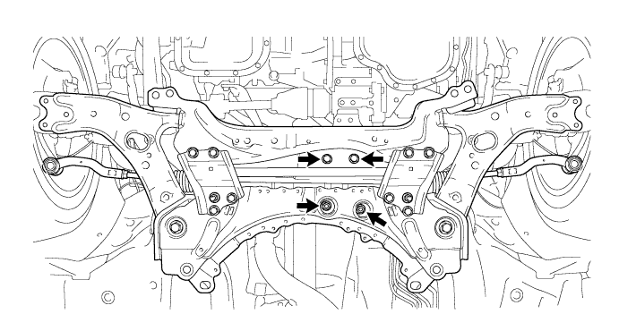
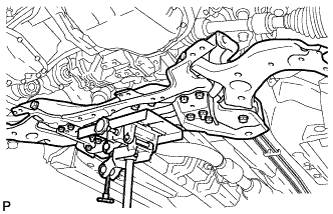 |
Support the front suspension crossmember with a transmission jack or equivalent
Remove the 2 bolts and remove the front suspension crossmember together with the steering gear assembly.
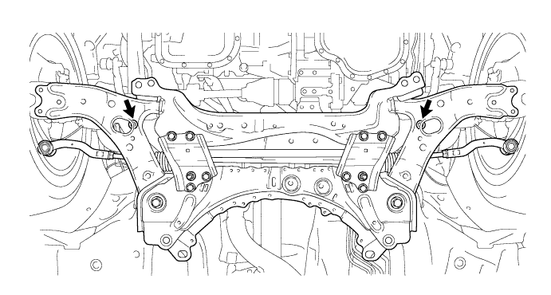
| 24. Remove Front Suspension Arm Sub-assembly Lower NO.1 LH |
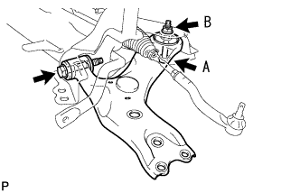 |
Remove the 2 bolts and nut, and remove front suspension lower arm No. 1 LH from the front suspension crossmember.
| 25. Remove Front Suspension Member Brace FR LH |
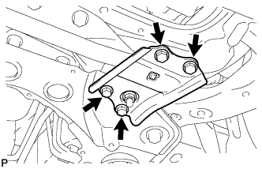 |
Remove the 4 bolts and remove the front suspension member brace FR LH.
| 26. Remove Front Suspension Member Brace FR RH |
| 27. Remove Stabilizer Bar FR |
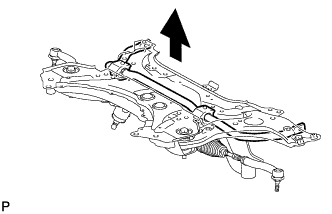 |
Remove the front stabilizer bar and the 2 front stabilizer bar bushings No.1 from the front suspension crossmember.
| 28. Remove Front Stabilizer Bar Bushing NO.1 |